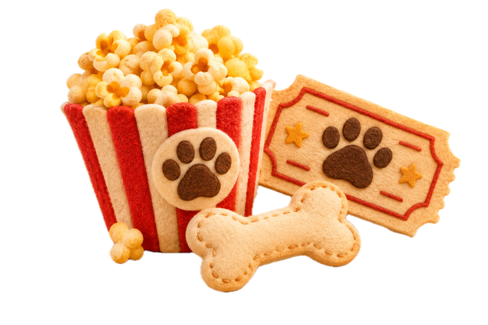

Happy Paws Kino präsentiert
Das läuft heute!
Ein ganz besonderer Kinotag für alle Zwei- und Vierbeiner. Entdecke unser Programm und freue dich auf die große Premiere!
Happy Paws Kino · Lüneburg
Unser Programm
12. Juni 2027
- Pfoten auf dem roten Teppich
- Der Einlass beginnt! Kommt an, macht es euch gemütlich und stimmt euch auf einen besonderen Kinotag ein.
- Willkommen im Kino
- Wir begrüßen unsere zwei- und vierbeinigen Gäste und verraten, was euch heute erwartet.
- Puschel & Pfote – Die große Filmpremiere
- Jetzt wird es spannend: Gemeinsam erleben wir die Geschichte von Puschel & Pfote auf der großen Leinwand.
- Pfotenpause
- Zeit für kleine Leckereien, frisches Wasser und nette Begegnungen mit anderen Hundefreunden.
- Ein Blick hinter die Kulissen
- Wir zeigen euch kleine Einblicke in die Filmwelt und erzählen ein bisschen mehr über die Entstehung der Geschichte.
- Pfoten-Applaus
- Zum Abschluss feiern wir unsere tierischen Filmstars und lassen den gemeinsamen Kinotag gemütlich ausklingen.
Ein besonderer Kinotag für alle Pfoten!
Du willst dabei sein?
Sichere dir jetzt deinen Platz bei unserer großen Filmpremiere!
Jetzt Tickets sichern